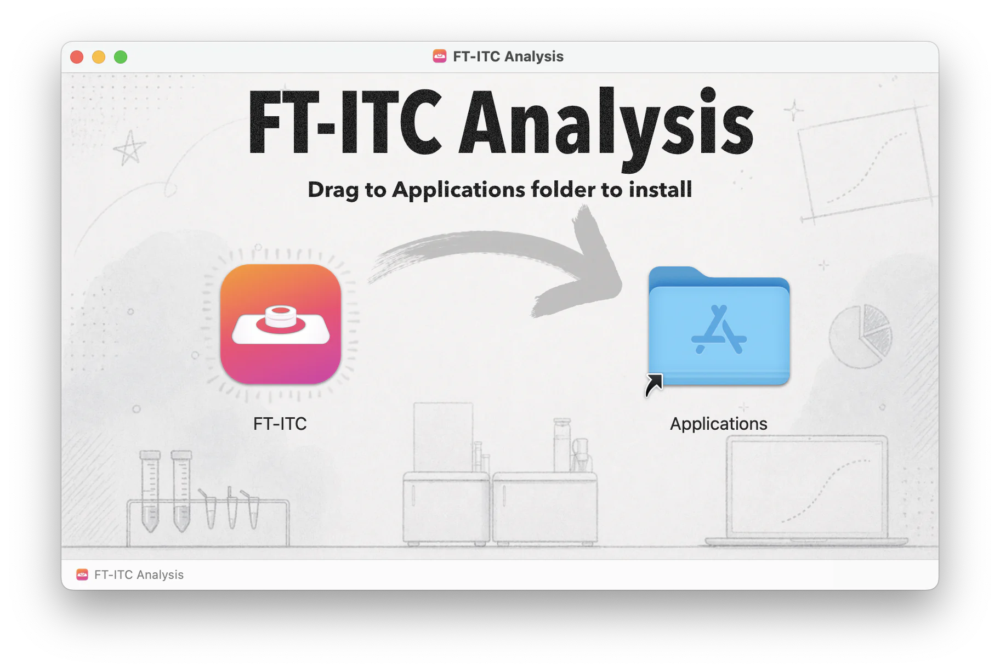
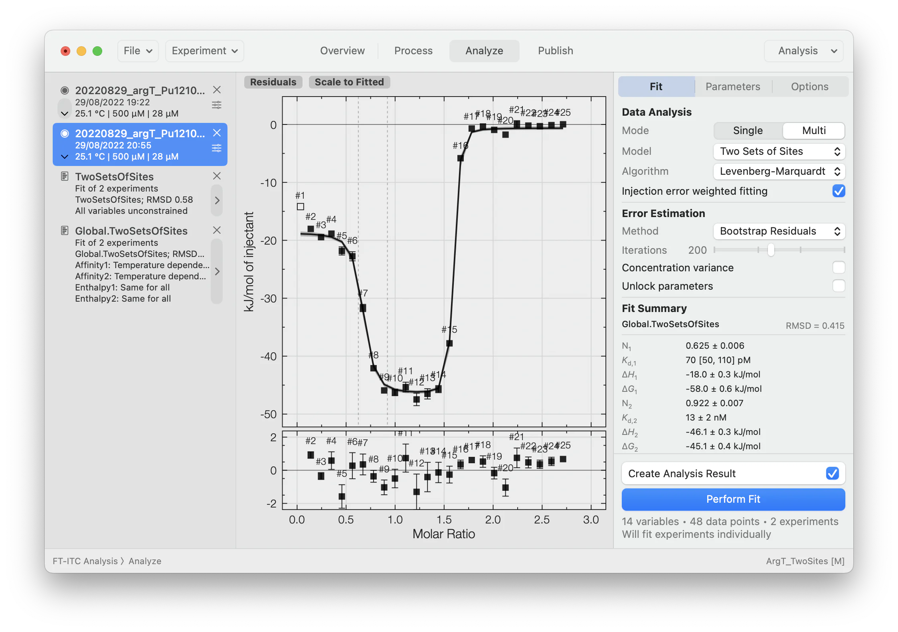

Operating system
macOS 11.1 or newer.
Installation
Download version 1.4.2, the latest signed and notarized release, then follow the steps below to install FT-ITC Analysis.
macOS release
Released 13 Aug 2026 · Signed and notarized universal application.
System requirements
macOS 11.1 or newer.
Apple silicon and Intel are supported through a universal application.
No additional packages or analysis services are required.
Installation steps
Use the download button above to save the latest FT-ITC DMG.
Open the downloaded disk image from your browser or Downloads folder.
Drag FT-ITC into the Applications folder shown in the installer window.
Launch FT-ITC from Applications. macOS may ask you to confirm the first launch of an application downloaded from the internet.

Ready to analyze
Once installed, FT-ITC Analysis provides the complete processing and fitting workspace on your Mac, including global models, residual inspection and uncertainty estimation.

Updating
Download the newest DMG and replace the existing FT-ITC application in Applications. Original data and `.ftxtc` project files are stored separately and are not removed.
Quit FT-ITC Analysis and move the application from Applications to the Trash. Uninstalling does not delete original experimental data or saved `.ftxtc` projects.